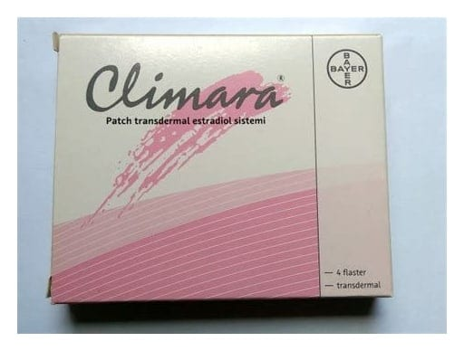

Climara 3.9 mg/12.5 CM2 Transdermal Flaster, 4 Adet

Ne için kullanılır
KT · Bölüm 1• CLIMARA 12,5 cm
’lik flaster şeklinde piyasaya sunulmuştur. Her 12,5 cm
’lik f laster 24 saatte nominal 50 mikrogram salgılayan, 3,8 mg estradiol (3,9 mg estradiol hemihidrat’a eşdeğer) içerir. • CLIMARA’nın etkin maddesi olan estradiol, östrojenler adı verilen hormon grubuna aittir. Östrojen, adet döngüsü de dahil olmak üzere kadınlık özelliklerini sağlayan temel kadın seks hormonudur. CLIMARA, bir Hormon Replasman (yerine koyma) Tedavisidir (HRT). • Her ambalajda 4 oval şekilli flaster bulunur. • CLIMARA menstrual periyodunu en az 1 yıl geçmiş menopozda ya da üreme organlarının alınması sonrası gelişen hormon yetmezliğinin belirtilerinin iyileştirilmesinde ve kemik erimesinin önlenmesi konusunda onaylanmış tıbbi ürünlere tolerans gösterilememesi veya bu tıbbi ürünlerin kullanılmasında sakınca olması durumunda gelecekteki kırık riski yüksek olan menopoz sonrası kadınlarda kemik erimesinin önlenmesinde kullanılır .